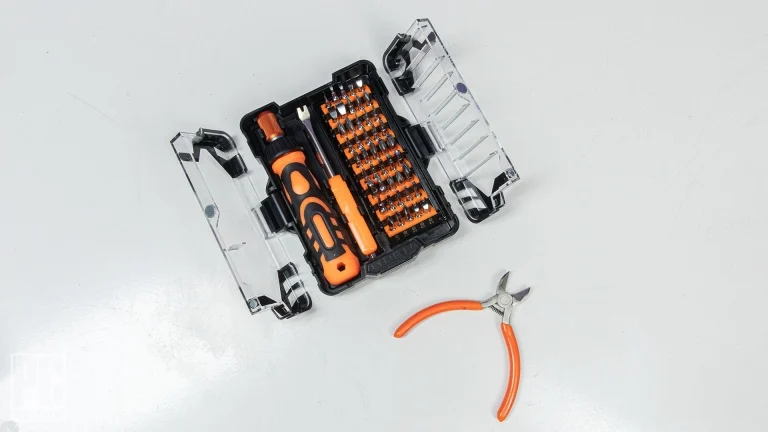
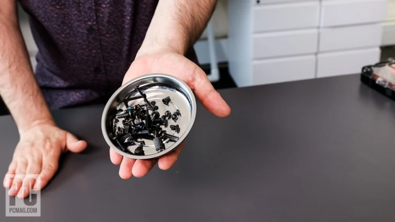
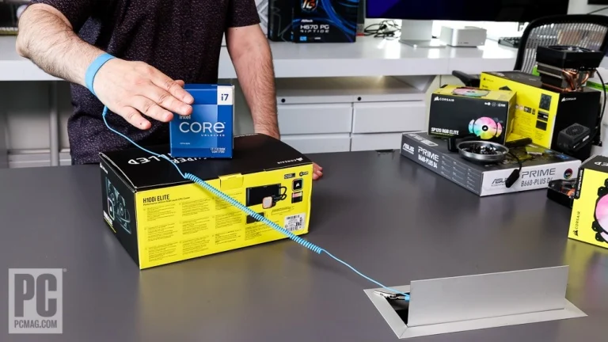
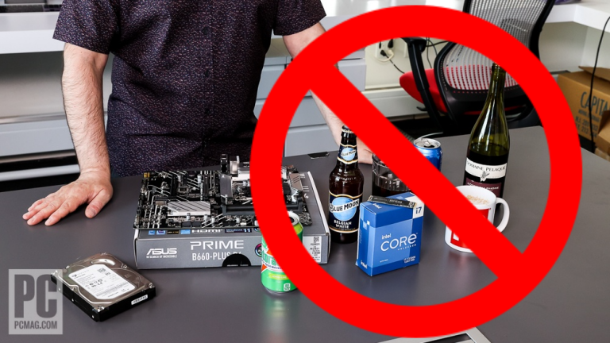

Performing the PC Build, Blow by Blow
1. Gather Your Tools
You might be able to get by with a screwdriver from your junk drawer, but if you're spending a bunch on a new PC, get a nice tool kit to go with it. You'll use it for not only this project plus upgrades down the road, and there's no law that a PC tool kit has to be used only with PCs. (Eyeglass repair and around-the-house fixes, anyone?)

Look for a good screwdriver set with an assortment of Phillips and regular bits both large and small. Pay particular attention to the Phillips assortment, since you'll be installing an M.2 solid-state drive which will require at least one bit for tiny screws. It's smart to opt for magnetic screwdriver bits (but keep them clear of your hard drives if any). Also look for a shaft extender for when you need to reach a screw blocked by tall components such as a CPU cooler or graphics card. Never use power tools like electric screwdrivers or drills which can easily overtighten and damage components.
The biggest mechanical part of PC building involves all the screws you'll need to manage. Consider a magnetic parts tray, like the ones auto mechanics use but on a much smaller scale. Such a tray, available at home stores or retailers like MicroCenter, will help you keep track of and sort the multiple screw sizes you'll handle in any PC build (and, like your tool kit, come in handy for non-PC purposes). If you want to keep things cheap, a dollar-store pill sorter also works well.

The next item is a bit controversial: a grounding strap. Most computer-specific tool kits include one. Whether you use it depends on your tolerance for risk, plus where you're building (both in your home and on the planet).
Touching a PC component while you're electrically charged can transfer static to it, which may be harmless but can be damaging. I've never killed a part due to static to my knowledge, but I live in the temperate Northeast U.S. and build PCs on wood and tile floors. If you work in the high desert of New Mexico on shag carpet and like to wear woolly sweaters, you definitely need a grounding strap! As a middle ground, one option is to plug in your new PC power supply on your workbench and touch the chassis periodically to dispel any charge you might be carrying.

If you do decide to use a grounding strap, you must clip it to something that reaches the ground; that same plugged-in power supply will do if you can safely clip the strap to a portion of the metal chassis. Don't shove the strap's alligator clip into any PSU openings or grilles, and be careful not to knock over any delicate components with the strap's leash as you work.
Also protect the surface on which you work. If you're building your PC on a piece of furniture whose finish you care about, put down a towel, pad, or other soft layer to protect the surface. Think, too, about the PC case; you'll need to lay it on its sides to complete the build, and a soft layer will protect it from getting scratched by a rough workbench.
If your chassis has one or more glass sides, make sure you have a place to stow these panels safely after detaching them. (I've broken my share of glass sides over the years; learn from my pain.) Put the side panels back in the box, buffered by packing foam, instead of leaving them balanced on edge somewhere you might accidentally kick them over.
In the same vein, work somewhere free of clutter, with plenty of space to spread out parts. You'll need good lighting, and definitely want to keep the space free of food or drinks. Mark my words: That soda can will hit your grounding strap the instant you reach for something, and Pepsi and motherboards don't mix.

Two final (optional but handy) tools: a book light or other small clip-on light and your smartphone. Use the latter's camera to photograph areas of the motherboard and blow them up for easier viewing. A magnifying glass can help if you don't have eagle eyes.
Tools assembled? Let's grab two essential parts—the motherboard and the CPU—and get building.